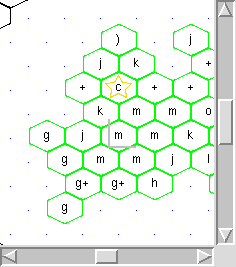
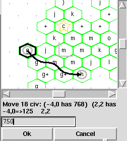
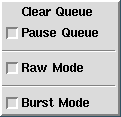
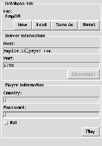
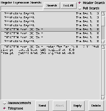

GUI Features
This file is intended as a brief summary of the options that may be used
while in the PythonTk empire interface.
Note: The Tk interface is designed to appear differently depending on which
platform it is currently running on. This document expects the user to be
somewhat versed in the standard GUI policies of their platform.
The Map Window:

The map window displays text character representations for each sector that
has been parsed by a dump or map command. If the sector has a
newdesignation that differs from the current designation then the map will
display two characters - the current designation followed by the
newdesignation. Otherwise, only the current designation is shown. In
addition to the standard text characters, a hexagon will be displayed
around known land sectors. These hexagons will be colored green for owned
sectors, red for enemy sectors, black for deity sectors, and grey for
unknown sectors. (These are the default colors; they may be changed in the
TkOption file.)
In addition to the sector representations, land/ship/plane units will
be displayed on the map as well. By default, a small blue square will be
displayed in sectors that contain ships, a pink square designates planes,
and a brown represents land units.
Along with providing information on sector designations and unit
locations, there are a number of mouse events that the map window will
recognize:
-
Left button - Clicking the left mouse button on a sector will cause the
censor window to select the specified sector.
-
Right button - The right mouse button will center the window around the
sector underneath the mouse pointer. This feature is useful when
your country grows to a size that is comparable to the maximum
world coordinates. By recentering the display, you can get a
better "feel" for sectors that under other circumstances might be
at opposite sides of the map window. It is also useful for
"scrolling" around the map when the scroll bars are too much of a
hassle.
-
Middle button - The middle mouse button (or shift-left button if you only
have a 2 button mouse) is used to select empire coordinates for
insertion into the command line. Clicking mouse button 2 will
insert into the current input buffer the coordinate for the sector
under the mouse. Alternatively, dragging mouse button 2 will
select a range of sectors.
-
Control+(left/right)button - The graphical map window may also be modified
in scale. mouse sequence Control-Left-Button will decrease the
size of each sector by 10%. The sequence Control-Shift-Left-Button
will decrease the size by 50%. Similarly, Control-Right-Button,
and Control-Shift-Right-Button may be used to increase the size of
the sectors.
-
Control-Middle-Button - This sequence causes the internal routines to
completely redraw the graphical map window. This is quite time
consuming on big maps, and is not normally necessary. (It is a
leftover from when the map window could get "littered" by bad
redraws.)
Additionally, the size of the main graphical map window may be resized by
clicking and dragging the small box located in the lower right corner of
the map window. (Additional map windows opened via the Map command can be resized using the window
manager.)
Command-line Window:
The command line is an integral part of this client. All keystrokes go
directly to the command line. The graphical portions of the client are
intended merely as an adjunct (never a replacement) for the standard text
interface. On platforms that support clipboards (such as the X selection
under X-Windows) select, copy, and insert text should work normally.
There are a couple of key sequences that will produce specific results:
When tab is pressed, the identifier of the object that is being viewed in
the censor window is inserted into the current command-line. When Alt and
one of the characters "gyujnb" is pressed, the key will be inserted into
the command line and the censor window's selection will be moved. The
movement is in accordance with the standard empire usage of these keys.
Otherwise, the command-line functions similarly to other clients -
commands get typed in, and output gets sent back.
When viewing output on the command-console, the censor window can be
instructed to view a sector by pressing the right mouse button over a text
description of a sector (text of the form "x,y").
Censor Window:
The censor window is located in the upper left hand corner of the main
window. The censor window can be changed to view sectors, ships, land
units, or planes. In a nutshell, the censor window displays the output
from the dump command in a more digestible form. (Although admittedly, it
is still pretty ugly at this stage.)
For unit censors, a listbox will be positioned underneath the censor
window. This may be used to select which units to display. There are
three methods of selecting sectors in the censor window:
-
In the map window a sector will be selected when it is clicked with
the left mouse button.
-
The selection can be moved one sector in any direction via the
Alt+[gyujnb] binding.
-
The selection can be changed by pressing the right mouse button
over a text description of a sector(text of the form "x,y" in the
command-console, telegram window, additional output windows, or
fields that have an x,y pair in the censor window).
Some of the censor window entries have special left mouse button
bindings associated with them. For example, you may set commodity
thresholds, or deliver thresholds by left clicking on their respective
boxes. In general, if the border around the field value changes when the
mouse is moved over it, then that value can be set. Most of these bindings
are fairly straight forward - they issue server commands that reset the
quantity. A more advanced case, however, is the use of the sector
commodity quantity field. When clicking on this field, a server command
will be issued that moves commodities to/from the sector's dist center.
Graphical move utility:

Pressing a mouse button over the quantity field of a commodity in the
sector census window will cause the main map window to be placed in a move
mode.
Using this mode, the selected commodity can be moved by pointing and
clicking source and destination sectors. Also, arbitrary sectors may be
selected as mobility way-points.
When move mode is first enabled the default path will be between the
sector selected in the census window and its dist path. If the sector does
not have a dist sector than a source sector will need to be manually
selected.
Enabling move mode will cause the quantity box in the area below the
map window to receive the input focus. (Clicking on the command-line will
return the input focus.) By default, commodities will be moved to or from
the source sector such that the specifed quantity will remain in the
destination sector. That is, the amount specifies a commodity level not
the amount to be moved. See the Mover
command for information on flags than can alter the meaning of the
amount field.
When the map is in move mode it rebinds the actions of the right mouse
button according to the following rules:
-
Clicking on a new sector: When the right mouse button is pressed over a
sector that is not already selected and is not part of the path
shown on the display, a new sector is added to the beginning of the
sector list. This new sector will seamlessly become the new source
sector and the previous source sector (if any) will become a way
point for the commodity.
-
Clicking on a sector in the path: Clicking on a sector that the path lines
travel through, but that is not already selected, will cause the
sector to be marked as a way point. The sector is seamlessly added
into the middle of the selected sector list.
-
Clicking a selected sector: This action allows the location to be dragged
to another sector. This allows the source, destination, or way
points to be reselected seamlessly.
-
Double clicking a selected sector: This action removes the selected sector
from the list of sectors. The route will be reconstructed from the
remaining selected sectors.
Status Line:
At the bottom of the root window is a status line.
The status line contains four fields.
-
Sub-prompt window - The left most area contains the sub-prompt entry
window. It is used to answer prompts from the server and from the
client.
-
Countdown Timer - To the immediate right of the sub-prompt window is the
countdown timer window. The countdown timer displays the predicted
time until the next update. This field uses information from
version and update to predict what time it is at the server, and
how much time there is until the next update.
-
Queue Information - In the center of the status line is the queue status
information. The queue status field is also a menubutton. The
queue status button displays the current status of the outgoing and
incoming command queue. Pressing a button over this field will
open up the Queue Options Menu. Under normal circumstances the
Queue Information window will either display a short message
indicating that there are no commands present, or one or two
numbers describing the pending input and output at the server. The
first number displayed shows the number of commands that are
contained on the queue. Both sent and yet to be sent commands are
stored on the queue while they wait for server output. The second
number displays the number of commands that have been sent to the
server. (The first number will always be greater than or equal to
the second number.) For example, a status message of "5/3" reports
that five commands are waiting for server output, and three of
those commands have been issued to the server. (The other two
commands are waiting for synchronization prior to being sent to the
server.)
-
Map Coordinates - The right most area is reserved for map window sector
information. When the mouse cursor is in the map window, this area
will show the coordinates for the sector that the mouse is
currently above. When drawing ranges, this area will display the
selected range in text coordinates.
Queue Options Menu:

The Queue Options menu can be opened by pressing a mouse button over the
queue status button, which is located in the status window. (The bottom
most part of the main window.) The Queue Options menu can be used to alter
the state of the outgoing queue. There are currently four options on the
menu:
-
Clear Queue - This option will remove all commands in the queue that have
not been sent to the server. Commands that have already been sent
will not be effected and will be parsed normally. For example, if
the queue status message box reports a queue status of "5/3" when
clear queue is selected, then the queue status window will be set
to "3/3". The client will disregard two commands, but will
continue to receive and parse the output from the three already
sent commands. It is not possible to clear commands that have
already been sent to the server.
-
Pause Queue - This toggle box is used to pause outgoing commands. When
Pause is selected, no new commands will be sent until the pause
option is deactivated. The pause queue option has no effect on
already sent commands. For example, if the queue status is set at
5/3 when pause is enabled then the client will continue reading in
data for three commands. After those three commands the queue
status window will report "Paused 2", and will detain the remaining
2 commands until the queue is unpaused. It is not possible to
"pause" already sent commands.
-
Raw Mode - This toggle box places the connection in and out of "raw" mode.
In raw mode commands and aliases will not be evaluated by the
client. This deactivates all the client side command-line features
like "rdb", "foreach", etc. See also: the raw command.
WARNING! In raw mode, it is possible to send the command "exec" to
the server. The client does not support the server's exec
protocols. If exec is sent in raw mode, it may become necessary to
disconnect via the Login Window to reset the client's connection.
-
Burst Mode - This toggle box will make all user commands default to burst
mode. A bursted command is sent to the server immediately and
without any checks to determine if the command answers a prompt or
a sub-prompt. Please see the information on the burst command and burst mode for more information.
Note: When raw mode is disabled and burst mode is enabled, all
commands are still interpreted as client-commands. This means that
text that is meant to answer sub-prompts may still be evaluated by
aliases and smart commands. Care should be taken to ensure that
the answers to sub-prompts don't appear as client-side commands.
Note2: When in burst mode, the sub-prompt window will perform
normally, but the input focus will not be automatically transfered
to this window. (It is assumed that sub-prompts will be answered
by future commands.) Occasionally, it may become necessary to send
a sub-prompt manually via the sub-prompt window. To do this, click
on the sub-prompt window with the mouse, and then enter the command
normally.
In addition to the above queue options, the Tk interface implements a
special "tear off" option - by pressing the mouse over the small
dashed-line within this menu, the menu will become a root window which may
remain displayed while performing other options. To delete this window,
use the window managers close function.
Login Window:

The login window allows host/port and country/representative information to
be entered graphically. Normally this window will only appear when a
server is being connected for the first time. To start a connection, enter
the server's host and port information in their respective fields. Then
enter your country and representative information in their respective
fields.
The login window can also be forced open via the Login command. If a server or country is
changed using this command, the database will probably have inaccurate
information from the old country. It is recommended that "Reset Database"
be selected each time a new country is connected to. (Note: The best way
to handle multiple countries is to specify a database file on the command
line, or to load a new database file dynamically via the load/save
buttons.)
The login window is separated into three sections:
- Database Section
-
The active database may be changed within the client as long the client is
not currently connected to a server. Only one server may be active at any
given time. (To connect to two servers simultaneously, run the client
twice.) The database section supports the following buttons:
- New Button - Save the current database, and then reset all known
information.
- Load Button - Save the current database and then reselect a new
database to load. Invoking this command will open a file selection
window that will allow a file to be selected.
- Save As Button - Save the current database to a specified file.
Invoking this command will open a file selection window that will
allow the new filename to be specified.
- Reset Button - This option will clear all information from the current
database. This option should be used with care - all known enemy
spy information, and all telegrams and announcements will be lost.
- Server Information
-
This section provides input boxes for server information. This information
is used when determining which empire server to connect to. Values in this
section may only be changed when off-line.
- Host - This area stores the host name or IP address of the
empire server.
- Port - This area stores the port number of the empire server.
- Disconnect Button - The "Disconnect" button will force the connection
to disconnect immediately. It is necessary to be disconnected in
order to set host/port information, or to reset the database.
Also, once a successful login has occurred, it is necessary to
disconnect in order to change country and representative
information.
This option is only available when connected.
- Player Information
-
This section stores information on the country used to connect to the
previously specified empire server. There are two input boxes, a kill
checkbox, and a Play Button in this section:
- Country - This input box allows the name of the country to be
specified.
- Password - Also known as "Representative", this area specifies the
country specific password that restricts access to the empire
server. NOTE: This field is not encrypted or mangled upon input -
it will be stored in plain text.
- Kill box - The "Kill" checkbox may be used to forcibly disconnect
another client that is connected to the server using your country
and password. Normally, it is not necessary to select this field;
however, occasionally a network condition can cause the server to
believe that an old client is still connected. If a message
similar to "[3] country in use by ..." appears, select
this field and press Play to force the server to disconnect the old
client and re-connect normally.
- Play button - Once the connection information is provided, press the
"Play" button to start a connection to the server. This action is
generally invoked just after specifying the server and player
information.
This option is only available when off-line.
The close window function of your window manager can be used to dismiss the
Login window. However, the Login Window will automatically close when a
server is successful connection occurs.
Additional Output Windows:
Extra server output windows may be opened at any time. Any empire server
command that is prefaced by "wind " will
open an output window and redirect the command's output to that window.
These additional output windows work independent of empire server
input-output. It is possible to leave these windows open while issuing and
receiving additional commands.
These output windows have a scrollbar attached to them, and they
support selection of the censor window by pressing the right mouse button
over a text description of a sector.
Use the window manager's close window function to close an output window.
The Telegram Tool Window:

The telegram window may be opened by sending the command wread at the command-line. The
telegram window supports viewing, sending, and replying to telegrams and
announcements.
The low-level parsers will automatically grab both incoming and
outgoing telegrams and update this display. If there is a shortage of disk
space, it may be necessary to use the Delete button to remove unwanted
telegrams from the database.
A sector may be "extracted" from a telegram by pressing the right-mouse
button over a text description of the sector. The client will scan the
area surrounding the mouse cursor for text of the form " x,y ". If the
scan produces a sector, then it is automatically selected by the censor
window.
The telegram window can be thought of as containing three sections:
-
Limiting Messages
-
Because a significant amount of telegrams or announcements can be
accumulated during the course of a game, it is often helpful to be
able to limit the listing to only contain relevant messages. The
top part of the telegram window supports this message limiting
feature.
- Regular Expression Search - By entering a regular expression in this
field and pressing the Search Button, the message listing will be
limited to only those messages that contain the specified regular
expression. A regular expression is a special language that allows
extremely powerful and flexible searches. The scope of regular
languages is too large to cover here - If you are unfamiliar with
them, you may use this field to search for simple alpha numeric
strings; just avoid characters like '(', ')', '*', '+', '\', etc.
- Search Button - Pressing this button will cause all messages to be
searched for the specified regular expression. All messages that
contain the pattern will be included in the message listing. Those
telegrams that do not match will be excluded from the listing.
- List All Button - Pressing this button will undo the effects of past
searches. The message listing will contain all stored messages.
- Header Search RadioButton - Selecting this option will limit the
regular expression search to the header of a message only. The
header is the first line - the line starting with a '>'
character.
- Full Search RadioButton - Selecting this option will cause the search
to check the entire message for occurrences of the pattern. In
addition to the header, the body of the message will also be
searched.
-
The Messages
-
The messages in the listing window are sorted in reverse-received order
(most recent messages are at the top of the list). The time
displayed next to each telegram is a local time approximation of
the telegram's reported server time. Every message selected is
displayed in the message window. If more than one message is
selected than more than one message will be displayed
simultaneously in the message window.
- Pressing the mouse in the message listing window will cause that
message to be displayed. Pressing and dragging the mouse will
cause multiple messages to be simultaneously displayed.
- Pressing Control-button-1 will toggle the selection of the message
under the mouse.
-
Message Actions
-
The bottom portion of the telegram window supports actions that may be
performed on the listing of telegrams.
- Telegrams/Announcements RadioButton - Selecting one of these items
determines which correspondence database to examine. Only one
database may be viewed at a time. (All searches are performed on
only one database at a time.)
- Send Button - This button has two purposes. When editing a message,
the send button will confirm the message and instruct the client to
transmit it. In this mode, Send acts as a confirm button.
When no messages are being edited, the Send button can be used to
send a new message (a message that is not a reply). If this occurs
and the telegrams database is selected, a popup window will appear
that will allow selection from the list of known countries. Select
a country with the mouse, or just enter in the name or number of
the country in the entry box.
- Abort button - This button will abort a message that is being edited.
This function is only available after selecting the Send or Reply
functions.
- The Reply button starts a telegram reply and causes subsequent input
to be forwarded to the text-edit window. After starting a reply,
the telegram may be sent using the Send button or canceled using
the Abort button.
- Delete Button - This action will remove all selected messages from the
database. Once used, the messages selected are permanently lost.
If the Delete button is pressed when a range of telegrams are
selected than all selected telegrams will be deleted.
Use the close window function of your window manager to close the
telegram window.
Configuring the Client:
There is a standard text file in the distribution called "TkOption". It
contains a number of Tk configuration commands. Using this mechanism, it
is possible to alter the client's color and font scheme. Personalized
coloring schemes for all of the windows and objects may be specified here.
On some platforms it may be necessary to edit this file to change the
default font from a proportional font to a fixed font.
In addition to the standard TkOption file, some platforms will load an
additional platform specific initialization file. On Unix systems the file
TkOption.x11 will be loaded after TkOption. On Windows based machines the
file TkOption.w32 will be loaded. Options in these files will take
precedence over options in the main TkOption file.
Please see these files for examples on how to configure the Tk Widgets.
Exiting the Client:
Use the window manager's close command to exit the client.